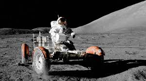

Apollo 17 was the final mission of the Apollo program and remains the most recent human expedition to the Moon. Launched on December 7, 1972, the mission carried Commander Eugene Cernan, Lunar Module Pilot Harrison Schmitt, and Command Module Pilot Ronald Evans.
The mission was unique because Harrison Schmitt was a professional geologist, making him the first scientist specifically trained in geology to walk on the Moon. NASA hoped that his expertise would maximize the scientific value of the mission.
Apollo 17 represented the culmination of more than a decade of Apollo development and lunar exploration.
Following a successful nighttime launch—the only nighttime launch of a crewed Apollo mission—the spacecraft traveled to the Moon and entered lunar orbit.
Cernan and Schmitt transferred into the Lunar Module Challenger and descended toward the Taurus-Littrow Valley, a region selected because it contained a wide variety of geological features. Scientists believed the site could provide clues about both ancient impacts and possible volcanic activity.
The landing was successful, beginning humanity's final visit to the lunar surface.
Apollo 17 featured the longest lunar stay of any Apollo mission. Using the Lunar Rover, Cernan and Schmitt traveled farther than any previous lunar crew and conducted three extensive moonwalks.
The astronauts collected hundreds of pounds of rock and soil samples, photographed geological formations, and deployed scientific instruments. Schmitt's geological training allowed the crew to make especially detailed observations of the lunar environment.
One of the mission's most important discoveries was orange-colored lunar soil, evidence of ancient volcanic activity on the Moon. This finding significantly improved scientific understanding of lunar history.
Apollo 17 returned approximately 243 pounds of lunar material, more than any previous Apollo mission. The crew also performed experiments involving seismic activity, heat flow, and the Moon's surface composition.
Meanwhile, Ronald Evans conducted scientific studies from lunar orbit and mapped portions of the Moon that had never been examined in detail.
The mission produced an enormous amount of scientific data that researchers continue to study decades later.
On December 14, 1972, Eugene Cernan became the last person to leave the lunar surface. Before climbing the ladder of the Lunar Module for the final time, he reflected on the accomplishments of the Apollo program and expressed hope that humans would someday return.
Those footprints remain on the Moon today, preserved by the airless lunar environment.
Apollo 17 brought the Apollo program to a successful conclusion. The mission demonstrated the extraordinary capabilities of human exploration and represented the peak of lunar scientific research during the twentieth century.
Although no humans have returned to the Moon since Apollo 17, its legacy continues to influence modern space exploration programs. The mission serves as a reminder of what humanity can accomplish when science, engineering, and determination work together toward a common goal.